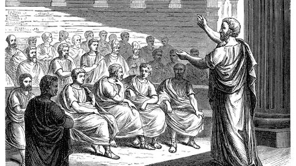

El Búho Indiscreto
noticias insólitas de ayer y de hoy
Ávalon, la Tierra Media y otros lugares legendarios que no existen (aunque te gustarían)
Las leyendas sobre estos sitios siguen formando parte del imaginario colectivo, quizá porque no sabemos si realmente se basaron en zonas reales
POR ADA NUÑO

El idioma del suelo: todos los hongos del mundo se comunican entre ellos bajo nuestros pies
Componentes inquietos de la vida, tal vez los hongos sean la vida misma, hilvanándose por todas partes, dando sentido a lo que existe a su alrededor
POR CARMEN MACÍAS
Las claves del DIN A4 o por qué las medidas de un folio tienen el tamaño perfecto
Estamos más que acostumbrados a usar los folios de tamaño DIN A4, pero ¿por qué tiene unas medidas de 210×297 mm?
POR EL CONFIDENCIAL
Los 5 puntos con los que decidimos quiénes son nuestros amigos
La palabra amigo abarca muchos significados diferentes, pero parece bastante claro que comunica un sentimiento de cercanía que eleva a esa persona a un estatus especial
POR ACYV
¿Por qué viajar en coche nos produce cansancio y sueño?
Pocos viajes en carretera recordaremos de nuestra infancia, pequeños trayectos, trozos que nuestros párpados acabaron desfigurando para el recuerdo. Lo de montarse en un coche y pillar el sueño es universal
POR ACYV
"Perdonen que... no sea cierto": frases muy conocidas (y repetidas) que nadie famoso dijo jamás
Solemos utilizarlas sin saber muy bien dónde las hemos oído, si son reales o si las personas a las que se les atribuyen en realidad jamás dijeron tal cosa
POR ADA NUÑO
